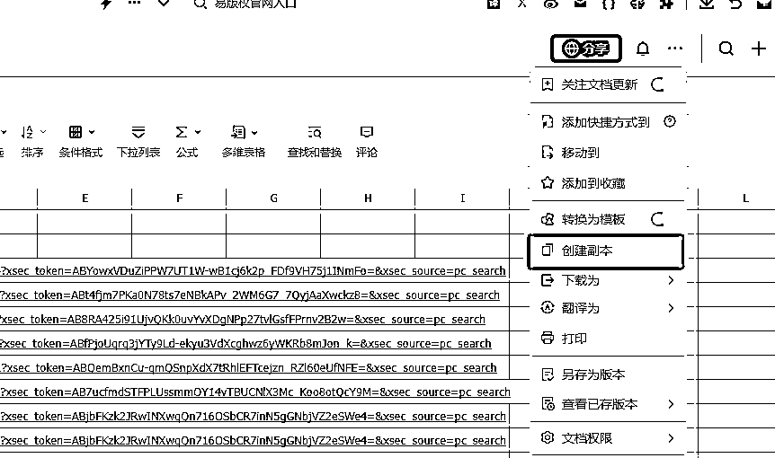
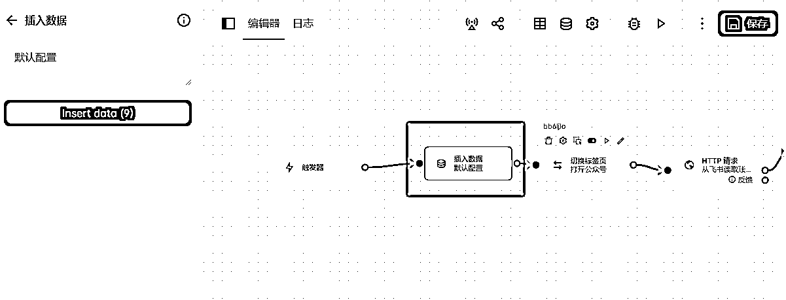
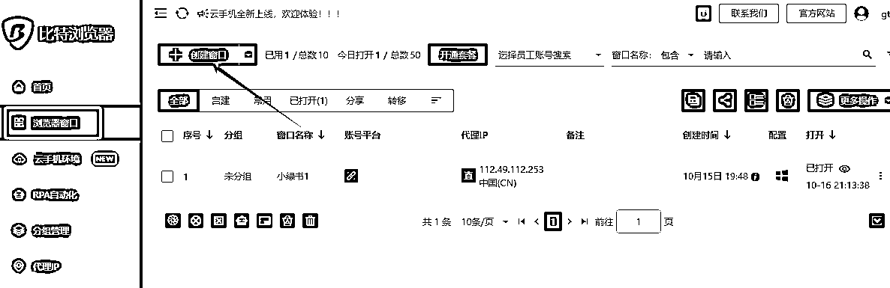
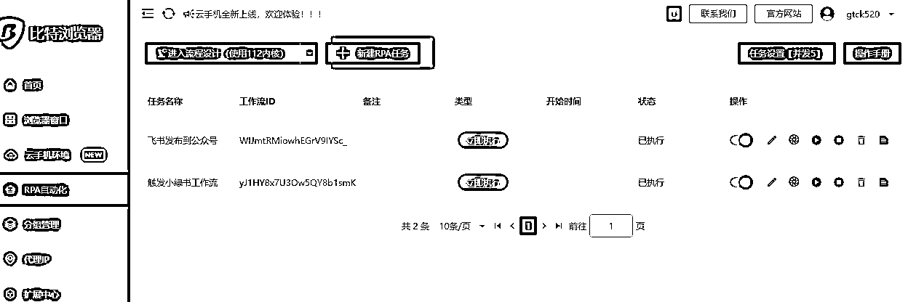
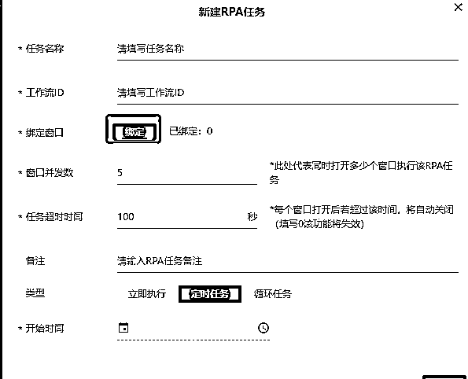
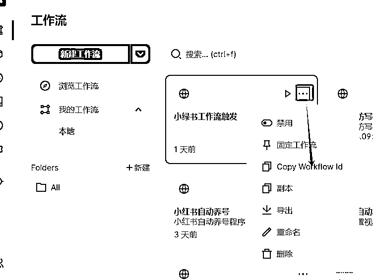
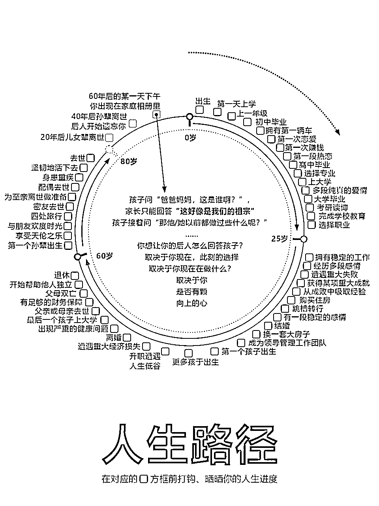
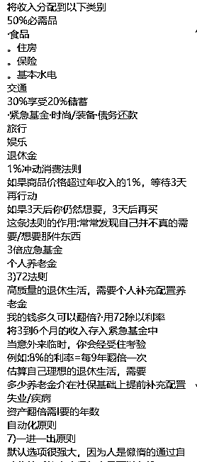

来源：https://b121w2zgwyx.feishu.cn/docx/GMDtddD10oQWlSxWUZEcuUFInof
小绿书最近很火，于是很多人就想到是不是可以直接搬运小红书的笔记来发呢？
但是有个问题，肯定不能完全一样的搬吧？
所以，就有人就提出是不是可以提取图片内容，进行修改然后替换背景图，改成小绿书呢？
当然可以！但是，这些操作，人工做起来还是相对繁琐的。
当然！目前，已经有很多大佬已经用AI+RPA实现了自动化了。包括我自己也整过影刀rpa的小绿书发布。从我自己的使用，以及交流群朋友的反馈来看。目前的AI+RPA工具，或多或少存在如下问题：
1、rpa工具五花八门，对于不熟悉rpa的人，想用上工具，真的是九九八十一难。
2、有些工具封装的好，但内部流程我们看不到。当有些场景不适用的时候，自己想改又很难改。
3、当rpa操作的东西越多的时候，就越不稳定，只要链路上的某个软件做了调整，就有可能导致整体失败。
为了解决以上问题，这一次的脚本思路我进行了以下优化：
1、尽量使用易分享的RPA，让大家在脚本的安装上更方便。
2、减少RPA工具调用的环节，能用接口就用接口。
3、工作流拆分零件化，让有需要修改需求的朋友，可以通过灵活替换节点，完成自己的迭代。
4、在使用上进行一定的封装，让即使不懂工作流的朋友，只要脚本跑通，也能正常用上功能
换句话话来说，小白有小白的用法，同时给予了已经上手的朋友，自我调整的空间。
废话不多说，老惯例，先来来看看这套脚本的展示：
接下来，我来分享一下整个脚本的思路，以及如何使用这套脚本
1、使用rpa爬取小红书笔记，并将爬取内容存入到飞书。
2、coze工作流中，从飞书读取爬取的链接，进行ocr识别读取内容和修改，将修改后的内容，一键批量生成新的图片，最后录入到飞书的待发布文章中。
3、通过rpa触发coze工作流的自动执行。
4、rpa读取待发布文章，进行批量发布。
5、第4步的脚本，如果配合上 比特浏览器，就能实现多账号发布，并且还可ip隔离
6、所有脚本都设置成定时执行的话，就能实现整套流程自动化
https://www.bitbrowser.cn/ 没什么特别说明的，直接安装就是了
点击系统配置=》找到文件下载目录配置 改成你想要的目录
这个目录是后面 小绿书的图片下载时要用到的。
需要导入的三个脚本为
1、
2、
3、
分别下载以上三个脚本到本地。
然后, 打开比特浏览器=》 点击 “RPA自动化” =》进入流程设计

浏览器会初始化，并打开一个用于调试的RPA窗口，以及自带安装好的Automa 插件。

打开automa窗口，进入工作流页面=》点击下拉标志=》点击导入工作流，将前面下载的工作流导入

【飞书appid与appsecret的申请（重要！！）】
我的AI方案都是基于飞书做存储数据，所以飞书应用的建立是必须的。这一步如果配置不好，工具跑不通。请大家严格按照教程操作。
进入我的飞书表格
创建一下副本

然后获取飞书表格链接，注意了，每个表单点击一下，链接都不一样的，后面的配置会用到，一定要对应正确的表格链接

接下来，我们开始进行脚本的基本配置，每个脚本都要配置哦。我们首先打开比特浏览器=》 点击 “RPA自动化” =》进入流程设计。
然后进入工作流页面找到我们的刚刚导入的脚本，点击进入脚本编辑页面。找到触发器的后面一个节点叫做“插入数据”，我们双击“插入数据”，然后点击左边的 “insert data”按钮；

我们会看到这个配置页面，我们把这里里面的值，全部替换成我们自己的值就行了。切记变量名不要去修改，否则会出错

字段对应如下，配置的时候注意对应清楚；
app_id 填你前面飞书得到的app_id;
app_secret 填你前面飞书得到的app_secret ;
daifabu_sheet_url 填你的飞书待发布表单的url（前面有说明过了）
yifabu_sheet_url 填你的飞书已发布表单的url
zhanhao_sheet_url 填你的飞书账号配置表单的url
sheet_url还有xhs_sheet_url 填你的飞书的小红书爬取表单的url
save_draft 这个填1 代表发布到草稿箱，填0代表直接发布（待测试完善）
download_path 这个填前面第2步，比特浏览器的下载目录就行了
is_bite 如果是其他浏览器或者在比特浏览器rpa调试时这里设置为0； 如果是正式绑定到窗口使用时，记得设置为1；
三个脚本都有这个默认配置项，记得修改！！
配置完成记得点击右上角的 保存！
上面的配置完，其实直接运行就可以用了。不过为了实现多账号，以及定时执行，我们还需要将rpa脚本绑定到浏览器的窗口中。


创建成功的话，这里会出现你命名的窗口

这里的窗口，你们就理解成一台小电脑吧，他只运行了一个浏览器。 但是每个窗口可以有不同的ip地址，这样你如果有不同的账号，就能模拟出不同电脑登录的效果了。
因此，你要做几个账号，就创建几个窗口，然后将不同的微信在不同的窗口里面登录就行了。



脚本就绑定好了，其他脚本一样的操作，不过要注意，采集小红书的脚本，运行前有个输入参数要填，如果绑定到窗口执行会不方便。建议暂时不要绑定。除非你知道怎么优化脚本。

以上绑定脚本时，有个工作流id是从这里复制的：

绑定到默认的窗口后，从飞书发布到小绿书的脚本里面，有个保存资源的控件，默认没有写入下载目录的权限，我们要去修改一下。

到这里基本没什么问题了。开搞吧！！
目前，我这套流程，还是存在不少问题的，比如说，对于图文结合比较多的小红书笔记，例如这样子的：

OCR能提取到内容，但是里面的内容是所有的拼凑在一起，无规律的 例如：

虽然大模型可以根据语义，大致理解和修改出来。 但是很难还原出笔记原来的精髓！！我测试过，我目前的工作流这种改出来的基本不能用。期待有大佬能搞出更牛的方案
目前，图片只有干净背景，文本比较简洁的才容易转换成功，内容太多的也有可能导致，跟预设的模板不匹配的问题。
不过总体来说，总能挑出一些基本能用的拿来发了，比自己动手做强多了。
所有不能正常录入飞书的情况，99%是权限配置和表格没对应的问题，请先排查配置情况。我已经增加了一篇飞书的详细配置教程，自行参照操作：
“很抱歉，同步失败。请检查网络连接是否正常，或者稍后再试。” 或者 运行中止 之类的。 只要脚本不是一运行就失败。而是转圈圈，转了很久才失败的话，基本是因为coze工作流的超时导致的。 但是，超时了，实际上飞书可以正常生成文章内容，大家检查飞书待发布表格是否有内容。有内容就忽略报错就好了。
还有类似的Cannot read properties of undefined (reading '标题') 。是因为读取的表格里没有内容。请先检查内容是否为空！或者待发布文章表格链接是否配置正确
账号配置里面有 领域和 类型， 只有当待发布的文章，领域跟类型跟账号配置的能对应上，才会发布。并且账号配置里的 账号名称 要跟公众号的名称一致才行。脚本靠名称识别是否发布。
感谢圈友@朱越的小绿书精华文，本文的脚本是参考了大佬分享的脚本改的！省了挺多事。